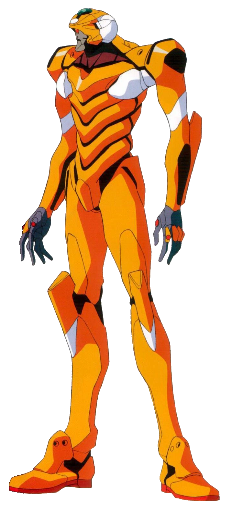
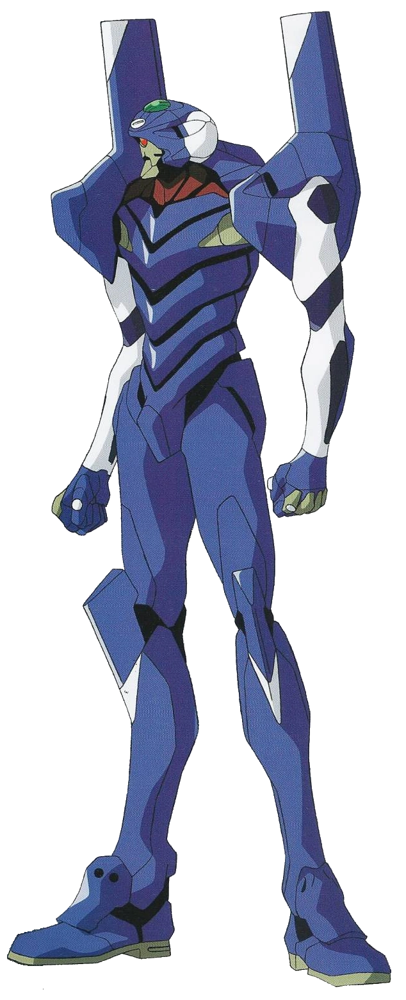
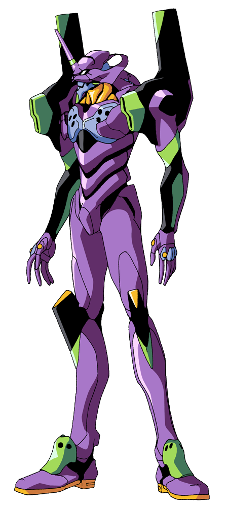

Evangelion Unit-00 is the first successful Evangelion, and is piloted by the First Child, Rey Ayanami. Its helmet design is similar to the previous failed Evangelion prototypes seen in the Eva Graveyard, albeit with only one "camera." The helmet also contains a green dome on the top which glows upon activation. Unit-00 is the only Evangelion of the main trio that is never seen without its armor restraints (Unit-01 being seen on multiple occasions, and Unit-02 in The End of Evangelion), and the appearance of its organic body is thus unknown. Unit-00's armor was initially colored a yellowish-orange like the previous prototypes, but it was heavily damaged by the Angel Ramiel's particle beam during Operation Yashima. The subsequent repairs and upgrades included blue armor plating in addition to other alterations in order to make it more suitable for combat conditions. This upgrade is referred to as Evangelion unit-00 there for the name. These upgrades make it greater resemble the other Evangelion units; in particular, the addition of shoulder pylons. Though in the battle against Matarael, these pylons are shown to hold retro-rockets, and in the battle against Sachiel, it is also shown that it has a Progressive Knife similar in appearance to Unit-01's. Either its pylons hold both equipment, or these were simply different equipment loadouts. Due to its prototype status however, it cannot be fitted with D-Type Equipment. Unit-00 tends to be the most unstable of the Evangelions, going berserk in several tests to the detriment of the pilot. The true nature of Unit-00's soul is never specified, but it is heavily implied to be directly connected to Rei.

Unit 01 (初号機, Shogōki), or Test Type, is the experimental model of the Evangelion series and the second specimen to be built in the Nerv headquarters, studied under the direct supervision of Dr. Yui Ikari. It differs from all previous and subsequent specimens, as the biological matter that forms its basis comes from the second Angel, Lilith. In addition to its predominantly purple coloration, it is characterized by a long horn that extends from the center of the forehead and a binocular viewer.It is the first humanoid to be used in an actual war operation. The unit acts out of control on several occasions and takes on a decisive role in wartime operations. The living humanoid at the base of Unit-01 is characterized by brown-colored organic tissues and a red blood-like body fluid. The unit's mouth is normally secured with bolts, and its actual biological body is covered, like the other units, by a special constrictive armor. The unit has positive operational results and the greatest tactical experience out of all the units that Nerv produced. The first activation experiment of Unit-01 was carried out in 2004 in the Laboratory for Artificial Evolution and conducted by a research center called Gehirn. Yui was designated as the experiment's test subject; during the experiment, her synchrony rate reached 400%, a percentage at which the subject dissolves into the Evangelion. The case was dismissed as an accident, and her soul remained within the unit. Although the origin of the accident is never clarified within the series, it may have been the consequence of Yui's choice.[159] The second activation attempt occurs eleven years later in 2015, when the Third Child[160], Shinji Ikari, is brought aboard.[122] Shinji, despite the low probability of success and lack of training, manages to achieve a 41.3% sync rate on the first attempt. The success of the procedure might have been determined by Yui's will, who in some situations intervenes in defense of her son and moves the Eva of her own will.[ In the series' nineteenth episode, Eva-01 devours the Angel Zeruel, thereby assimilating its //S²// Engine, an organ that allows the Angels to generate an unlimited supply of energy. In the Rebuild of Evangelion installments, Eva-01 has some aesthetic differences,[163] particularly in the chest and coloring. During the battle against the tenth Angel, the color of its stripes changes from green to orange and it sports a halo of light.[164]--Emmauscollege--Havo 4--2026/27--